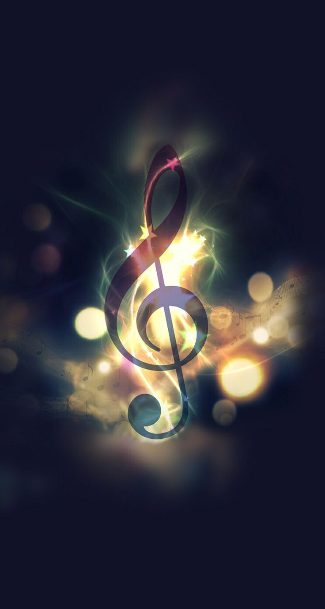

Enjoy!
Music is essential to many of our lives. We listen to it when waking up, while in transit, at work, and with our friends. For many, music is like a constant companion. It can bring us joy and motivate us, accompany us through difficult times, and alleviate our worries. Some styles speak for themselves that have the ability to drift you away from relaity. Inspriational soundtracks from movies or orcestral have so much power in them that modern day electroinic music have incorporated these melodies. Not only does music reach us on intellectual, social, and emotional levels, but many describe it as spiritual or mystical. Music can bring us back to ourselves, be our mirror, and show us a side of us we may have long forgotten or never knew existed.
Music has a special way to supress us. We need not forget to fine tunes brought to us by the many talented composers. Thanks to them we are able to express ourselves directly through it.
